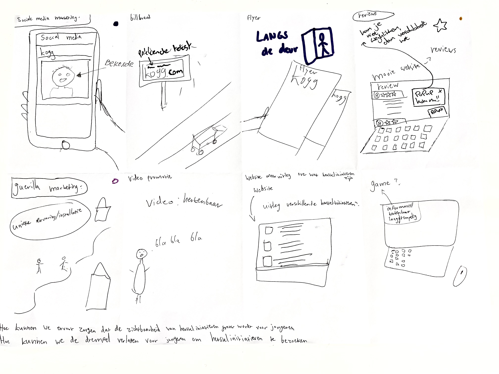
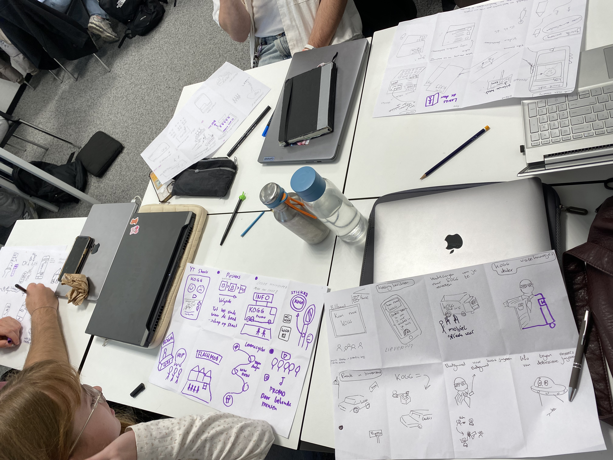
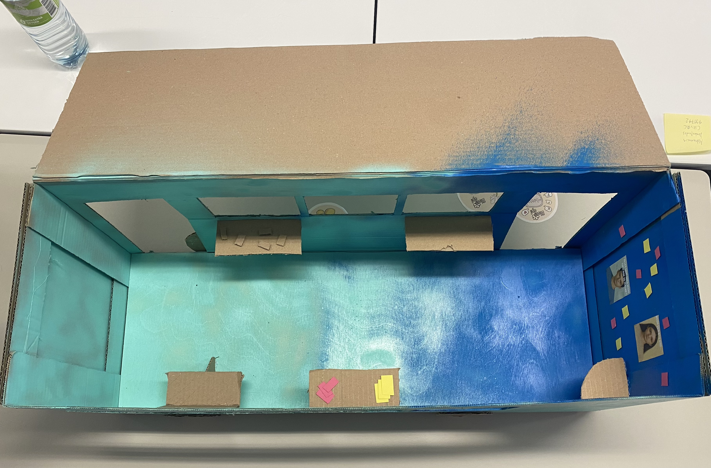

Bloei Op! - Transmedia Campagne
Probleem
Veel jongeren ervaren mentale problemen zoals stress en eenzaamheid, maar weten niet waar ze terechtkunnen voor hulp of vinden de drempel te hoog. Bestaande herstelinitiatieven zijn er wel, maar worden onvoldoende gevonden. In samenwerking met Kenniswerkplaats Onbegrepen Gedrag Groningen was de uitdaging om deze initiatieven zichtbaar en toegankelijk te maken op een manier die veilig en herkenbaar voelt.
Mijn rol
Ik werkte in een team en was verantwoordelijk voor onderzoek, conceptontwikkeling en de visuele en ruimtelijke uitwerking. Ik ontwikkelde onder andere een persona, stelde ontwerpvoorwaarden op en bedacht de naam “Bloei Op”. Daarnaast focuste ik op de beleving en flow van de Bloeibus en werkte ik het concept uit in schetsen, visualisaties en een prototype.

Aanpak
We startten met onderzoek naar de doelgroep. Hieruit bleek dat jongeren behoefte hebben aan herkenning, een veilige omgeving en laagdrempelig contact. Ook spelen social media en ervaringsverhalen een grote rol.
Op basis hiervan bedachten we ideeën en kozen we voor een fysiek en opvallend middel: een bus. Tijdens het proces heb ik ontwerpkeuzes continu getoetst aan de behoeften van de gebruiker en het concept iteratief verbeterd met snelle usability tests.
Met behulp van AI-gegenereerde afbeeldingen kon ik snel en visueel testen welke bus de doelgroep het meest laagdrempelig en prettig vond.

Dit was een Crazy 8.


Deze busvisualisatie gebruikte ik om te testen bij de doelgroep.
Oplossing
We ontwikkelden “Bloei Op”: een transmediale campagne met de Bloeibus als centraal onderdeel.
De bus staat op plekken waar jongeren komen en nodigt uit om naar binnen te stappen. Binnen heb ik een verhalende ruimte ontworpen waarin jongeren door een proces bewegen van herkenning naar hoop. Daarbij lag de nadruk op interaction design, prototyping en een sterke audio-visuele ervaring.
De campagne wordt versterkt met posters, social media en andere middelen, waardoor jongeren via verschillende kanalen in contact komen met de boodschap.


Resultaat & reflectie
De campagne verlaagt de drempel om hulp te zoeken en maakt herstelinitiatieven zichtbaarder. Door storytelling en beleving voelt het veilig en toegankelijk.
Ik heb geleerd hoe je een maatschappelijk probleem vertaalt naar een concreet concept dat aansluit bij de doelgroep. Mijn focus lag op beleving en gevoel. Tegelijkertijd heb ik geleerd om eerder af te stemmen en sneller te testen.

